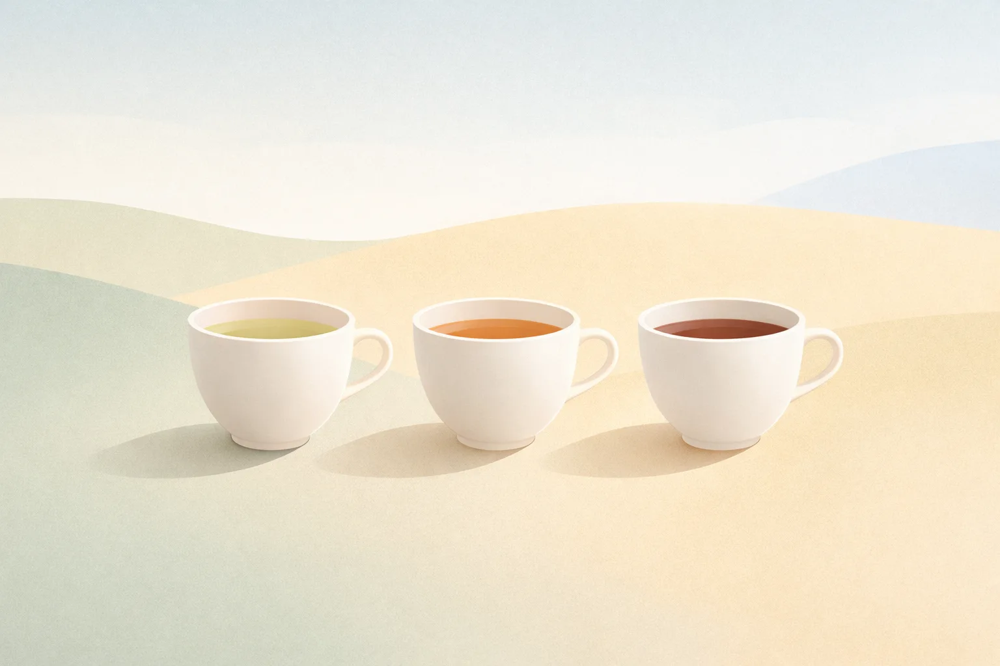
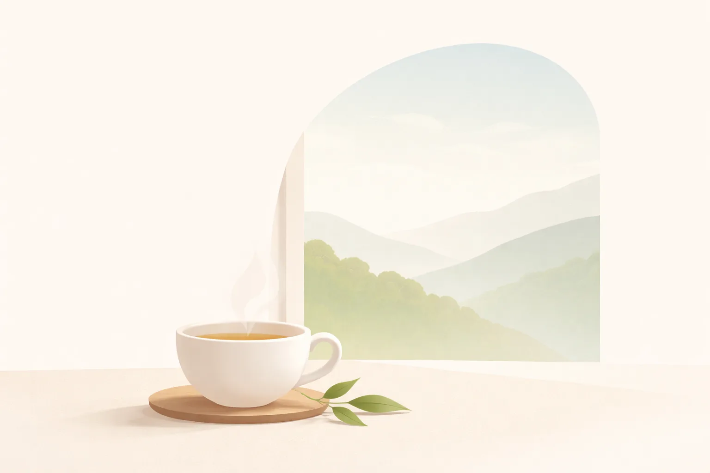
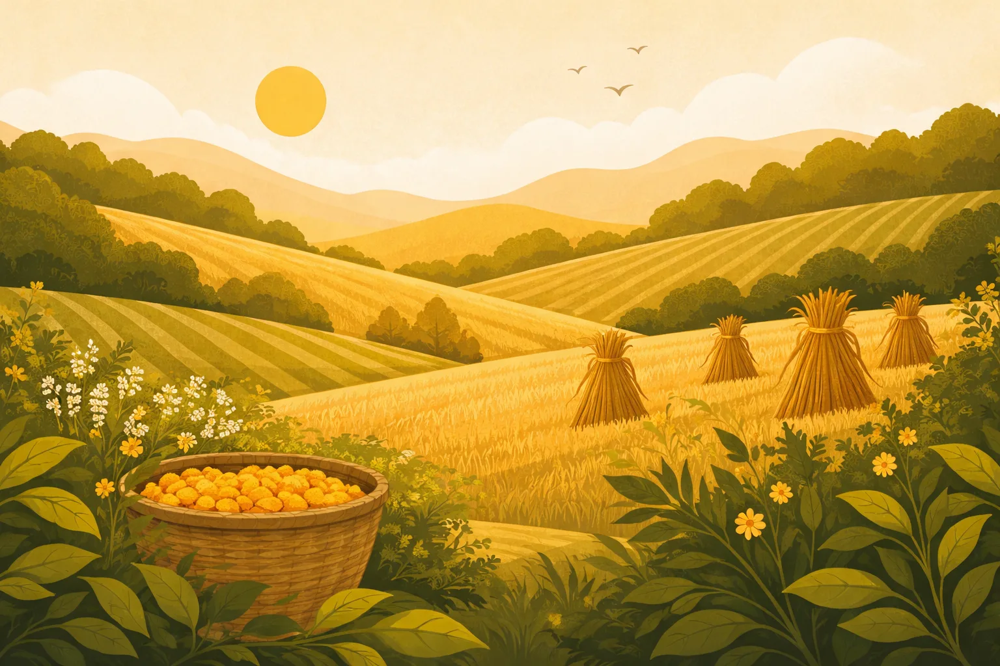
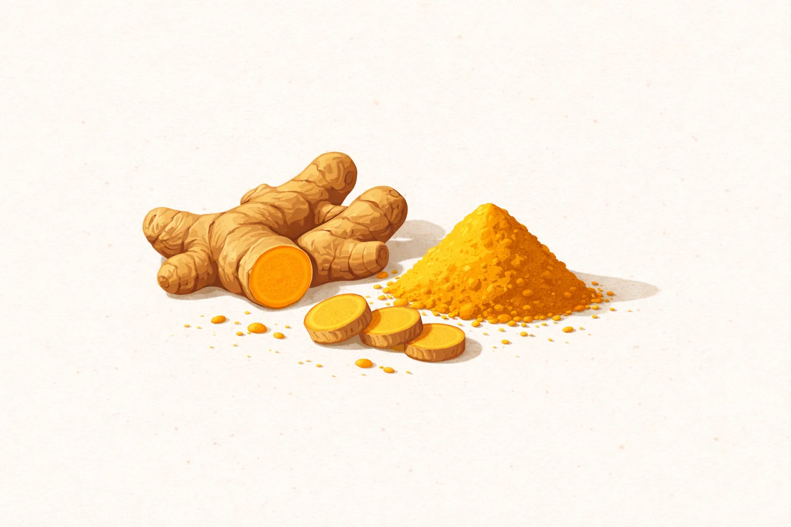
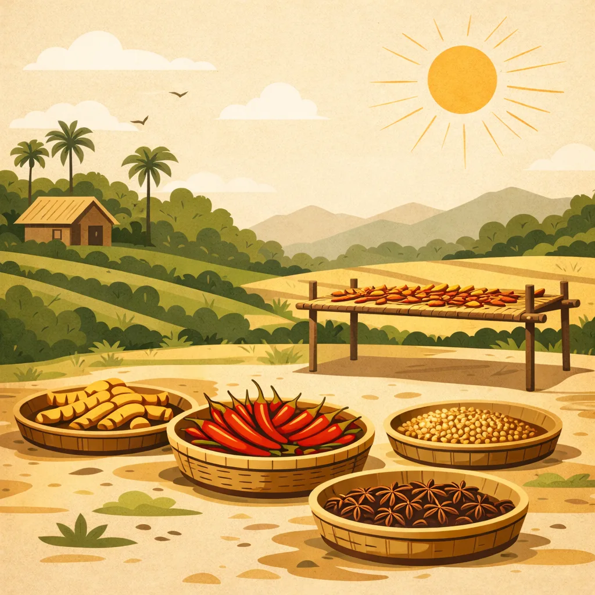
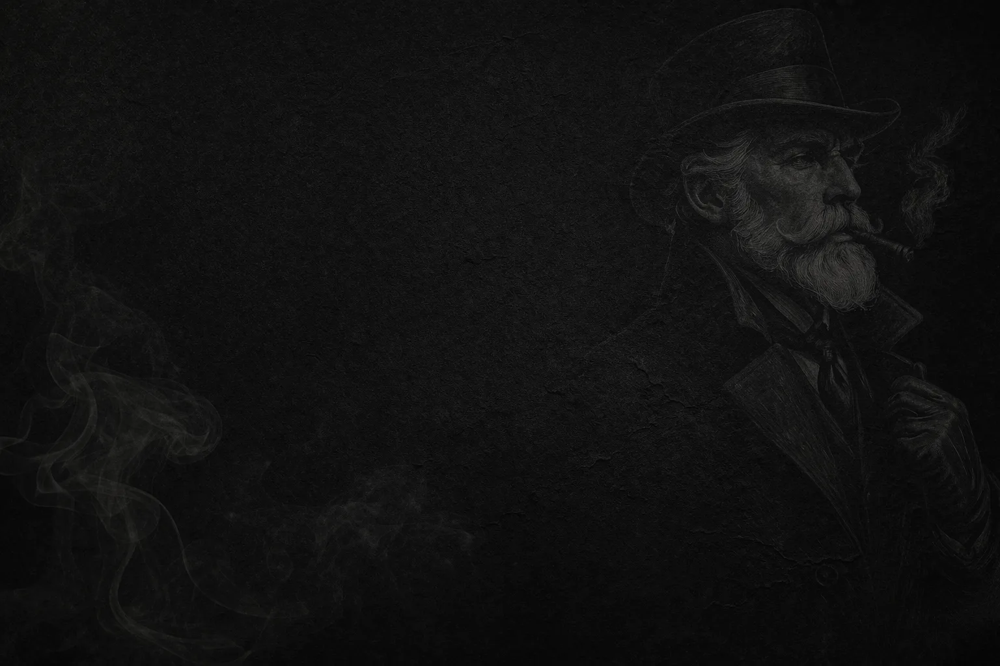
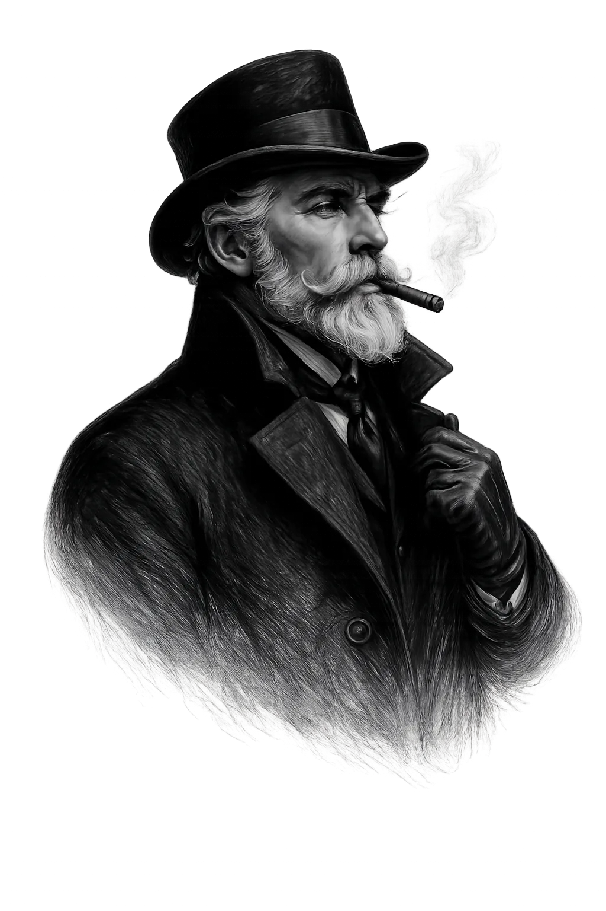

Teavē
Story + Product + Mobile
An origin-led tea experience extending from web into mobile.
A look at the digital experiences, product systems and brand work we are building across three very different businesses.
Web Development · Mobile Application Development · Digital Branding
Origin, collection, product and editorial experience brought together in one digital world.
Teavē's experience moves beyond a simple catalogue. The project brings together Origin, Philosophy, Artistry, Collection and Chronicle, giving the brand a connected way to present the story and character of its teas.


Origin-led product experience supported by commerce and brand storytelling.

SpiceCraft Origins · Origin experienceThe platform connects single-origin harvests, seasonal craft, purity and product discovery. The experience explains how soil, sun, time and careful handling shape each spice before it reaches the customer.


A restrained digital experience shaped around Indian tobacco, craftsmanship and a distinct brand identity.

Blackthorn & Co. · Brand experienceThe experience moves through Indian tobacco origin, the Gentlemen Series, craft and process, and acquisition or correspondence. Its visual language is deliberately restrained and editorial.

We don't force every business into the same experience. The work changes with the brand, the audience and the problem that needs to be solved.
An origin-led tea experience extending from web into mobile.
A product-led spice experience supported by editorial brand content.
A restrained brand experience extending into logo and mobile development.
Our work is guided by a simple set of principles: understand the problem, communicate clearly, care about the details and keep improving the experience.
Tell us what you're working on. We'll help shape the right digital direction.